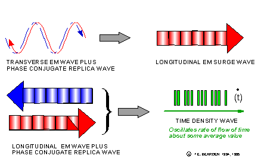

| Introduction and Background
In quantum field theory, there are four polarizations of photons.1
Using 4-space and the z-direction as the direction of propagation, we have x- and y- polarizations where the 3-spatial
energy of the photon is oscillating laterally, in the x- or y- direction.
These are
transverse polarized photons, as is any combination of the two.
The third polarization is along the z-direction, which is a longitudinal polarization.
In
other words, the 3-spatial energy of the longitudinal photon cannot oscillate in the x- or y- direction, and so it is oscillating to-and-fro along the line of motion, z-.
The fourth polarization occurs when the energy is frozen in all three spatial dimensions
x-, y-, and z- and it cannot oscillate in any of those directions.
In that case, the photon oscillates its energy in the t- direction, providing the t-polarized photon.
We will later
discuss how time is actually highly condensed energy. |
For this reason, physicists have erroneously considered mind to be "metaphysical" and
nonreal. Indeed, most physicists to one extent or the other are materialists, and consider the "mind" to be nothing but the operations
ongoing in a "meat computer." Nonetheless, in the time-domain the time is absolutely real, and it is completely electrodynamic in nature. There is no
metaphysics involved, and the temporal domain—along with mind and mind
operations—is simply an erroneously neglected area of physics. In present physics, the notion of mind is comfortably disposed of by imposing the use of the "observer" concept,
with out ever specifying that the observer has a consciousness and a mind. Indeed, "observation" is only about what that "observer" perceives. Obviously, one has a dramatically crippled physics if one eliminates that nonobservable called "time." Similarly, one also has a dramatically crippled physics when one eliminates the mechanisms and physics
ongoing in those time-like and dynamic "things" such as mind, that occupy time and function in it. |

Figure 2. Transduction of EM wave type by successive phase conjugate pairing.